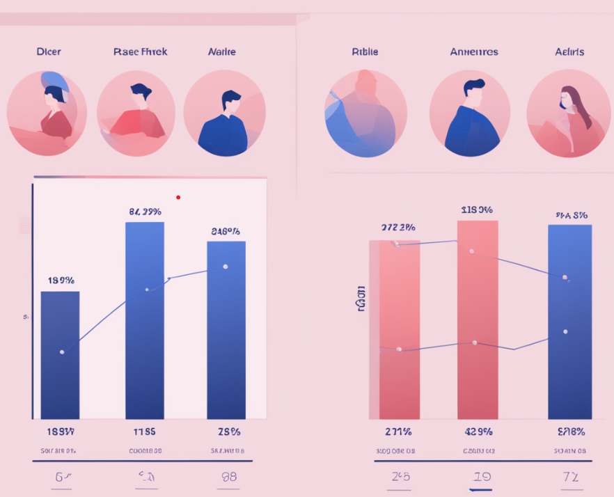
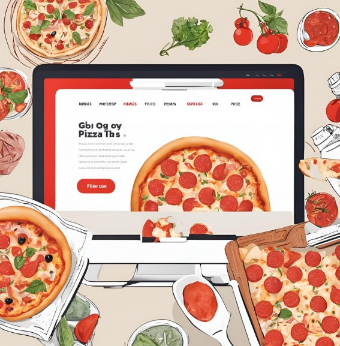

Portfolio
On this page, you'll find a selection of projects that showcase my skills and experience in software development, machine learning, artificial intelligence, and data-driven solutions.
Some of these projects have been completed and reflect my personal and professional growth, while others are ongoing and will be updated as they progress.
I invite you to explore these projects and see how my work contributes to advancements in technology.

Performed the analysis of user profiles on OkCupid to uncover patterns in matching preferences and profile popularity, followed by two additional major analyses. Created with a team of three, I played a key role in conducting in-depth examinations of attributes such as age, height, and body type, and explored factors affecting profile popularity, including income and lifestyle choices. My contributions provided valuable insights into user behaviors and preferences, enhancing our understanding of online dating dynamics.
August 2023 – December 2023

Developed an automated system for collecting and analyzing Reddit and YouTube data using Python, PostgreSQL, and machine learning models. Utilized NLP techniques for sentiment analysis and trend predictions, while also identifying toxic behaviors and assessing cultural influences. Automated data processing and visualized insights with Flask, Django, and Power BI.
Developed a Python-Django-based website using advanced logic and NLP to categorize cyberbullying and detect fake social media accounts. Utilized Python, SQL Server, Matplotlib, and a Random Forest model to analyze account authenticity and improve online security and user experience through streamlined reporting.
Designed a face recognition-based attendance management system using Python-Django and Machine Learning. Integrated advanced image and face recognition algorithms with an unique approach for accurate tracking, even with partial face visibility, using Python, SQL, Pickle, Pandas, and Matplotlib. Optimized system performance by 60% with a caching algorithm to avoid redundant model training.
January 2020 – April 2020

Created a Python-Django web application to assist visually impaired users by converting scanned text into speech using libraries like pyttsx3 and Pytesseract. Utilized Django and SQL Server to build and optimize the app for efficient PDF and text-to-speech conversion. Collaborated on planning, design, and troubleshooting with the team.

Built a web-based application that enables customers to order pizzas online, view order history, modify orders, and track deliveries. Developed collaboratively by a team of three, I was primarily responsible for designing the major (UI/UX) user interface pages and implementing key Backend functionalities, contributing to a robust and efficient ordering system.